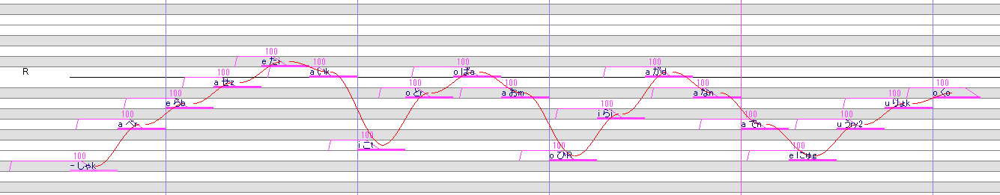
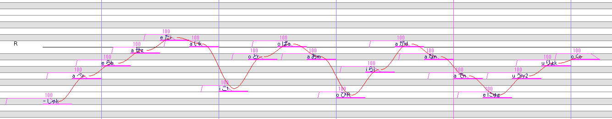

始めに
javascriptを有効にしてください。
動作確認環境
FireFox
Google Chrome
現在研究開発中の音源形式なので、このマニュアルにある手法は今後変更される可能性があります。
各種リンク
HANASU用VCVC音源紹介ページ
OREMO、setParam等を配布されているページ
開発者ツイッター（関係のない情報も複数ツイートします）@niconicoHaruqa
HANASU用VCVC音源情報リツイーター（関係のある情報のみリツイートします）@vcvcHaruqa
OREMO、setParam等を配布されているページ
開発者ツイッター（関係のない情報も複数ツイートします）@niconicoHaruqa
HANASU用VCVC音源情報リツイーター（関係のある情報のみリツイートします）@vcvcHaruqa
更新履歴
2016/09/11 Ver.1.0.0 初版
2016/09/25 Ver.1.1.0 コンテンツ追加、誤字修正
2016/09/25 Ver.1.1.1 誤字修正
2016/09/25 Ver.1.2.0 コンテンツ追加、表現修正
2017/06/27 一時ファイルへ差し替え 一部公開停止中
2017/10/01 - Ver.2.0.0 CVtoVCVCwithAI - Ver.1.0.0(メジャーバージョン) 開発コードHANE1.0へ切り替えに伴い更新中
2016/09/25 Ver.1.1.0 コンテンツ追加、誤字修正
2016/09/25 Ver.1.1.1 誤字修正
2016/09/25 Ver.1.2.0 コンテンツ追加、表現修正
2017/06/27 一時ファイルへ差し替え 一部公開停止中
2017/10/01 - Ver.2.0.0 CVtoVCVCwithAI - Ver.1.0.0(メジャーバージョン) 開発コードHANE1.0へ切り替えに伴い更新中
HANASU用VCVC音源とは
Haruqaが研究開発途中の音源方式で、HANASU用音源の解の一つです。
HANASUガチ勢のHANASUガチ勢によるHANASUガチ勢向けの音源となります。
音素の繋ぎ方、エイリアスの選定は専用プラグインによりほぼ実現されますが、一番重要なピッチは調声師に依存します。
HANASUガチ勢のHANASUガチ勢によるHANASUガチ勢向けの音源となります。
音素の繋ぎ方、エイリアスの選定は専用プラグインによりほぼ実現されますが、一番重要なピッチは調声師に依存します。
録音方法 公開停止中
原音設定規則 公開停止中
発音表記対応表 公開停止中
音源セットアップ 順次公開予定
音源使用方法 一部公開停止中
HANASU用VCVC音源はCVtoVCVCwithAIというエイリアス推定プラグインを使用することを前提としています。HANASU用VCVC音源紹介ページからダウンロードできます。
※促音は「Q」で入力するとより正しく推定が行われます。
※CVtoVCVCwithAI - Ver.0.3.0以降だと、「っ」を自動で「Q」に置き換えます。

エイリアス推定後

エイリアス推定
単独音エイリアス（接頭辞接尾辞が無いひらがな）でしゃべらせたいノートを並べ、そのノートを選択し、CVtoVCVCwithAIを立ち上げ、推定実行 ボタンをクリックすると、単独音エイリアスからVCVCエイリアスへ推定、変換が行われます。既存の単独音→連続音変換器のように使えると思われます。※促音は「Q」で入力するとより正しく推定が行われます。
※CVtoVCVCwithAI - Ver.0.3.0以降だと、「っ」を自動で「Q」に置き換えます。
長音「－」のノートの置き方
HANASU用VCVC音源は原音が非常に短いため、長音を調声する場合は、一つのノートを伸ばすのではなく、母音ノートを新たに置くことを推奨します。また、長音を含む原音のパターンが当てはまると、より良い推定結果となることが予測されます。
曖昧検索する
曖昧検索する にチェックを入れると、完全一致検索以外に、部分検索することが可能になります。
使用例
エイリアス推定前エイリアス推定後

参考動画等
デモ@ニコニコ動画
導入使い方@ニコニコ動画
歌に使った例（推奨はされない）@ニコニコ動画
連続音とHANASU用VCVC音源の比較画像@twitter
連続音とHANASU用VCVC音源の違いをペッっと画像化するとこんな感じ、どっちもP0フラグ付いてる。VCV→VCVC説明無し→VCVC説明付き pic.twitter.com/RZWfbNDVV0
— Haruqa (@niconicoHaruqa) 2016年10月4日
調整時間比較@twitter
（たぶん）お分かりいただけない･･･。 pic.twitter.com/2BrCPnk87H
— Haruqa (@niconicoHaruqa) 2016年10月6日
多音階（表情音源）テスト@twitter
HANASU用VCVC音源多音階（表情音源）テスト
— Haruqa (@niconicoHaruqa) 2016年10月9日
三つ突っ込んでみた。
切り替えはPrefixMap、他音階の音源を混ぜての学習は出来るけどお勧めはしない。制約が多い＆取り扱いが複雑なので、実用は難しいかな。別音源として作ったほうが分かりやすいし、楽。 pic.twitter.com/N3oz0VJqia
開発マイルストーン(ほぼ開発者メモ_実際の成果物とは異なる場合があります)
開発コード:HANE1.0
HANEが一枚生えた程度の違い
HANEが一枚生えた程度の違い
CVtoVCVCwithAI - Ver.1.0.0（エイリアス推定プラグイン） 2017年内
前提：音源フォルダ構成規則・ファイル命名規則の追加
UTAU\voice\音源名\HANE以下に下記のファイル
・初期状態の学習記録ファイル（learningRecord.ini）
・学習記録ファイルの作成に使用したoto.ini（[音源フォルダ内の区分けフォルダ名]oto.ini）
・音源スペック・簡易署名・特殊音素説明（html,txt,pdf等）などが保存される技術情報ファイル（technicalInfo.bin）
・【optional】上記「技術情報ファイル」特殊音素説明で定義されたhtml,txt,pdf等のファイル
・初期状態の学習記録ファイル（learningRecord.ini）
・学習記録ファイルの作成に使用したoto.ini（[音源フォルダ内の区分けフォルダ名]oto.ini）
・音源スペック・簡易署名・特殊音素説明（html,txt,pdf等）などが保存される技術情報ファイル（technicalInfo.bin）
・【optional】上記「技術情報ファイル」特殊音素説明で定義されたhtml,txt,pdf等のファイル
追加される機能
・学習記録ファイルの自動読み込み（ファイルあて先：UTAU\plugins\CVtoVCVCwithAI\学習記録フォルダ\[音源名].ini)
・学習記録ファイルの初期化
・バックアップ機能（ファイルあて先：UTAU\plugins\CVtoVCVCwithAI\学習記録フォルダ\[音源名][日付].back)
・技術情報ファイル（technicalInfo.bin）のビュアー
・技術情報ファイル（technicalInfo.bin）が存在しない場合、旧バージョンのプラグインへの誘導
・学習記録ファイルの初期化
・バックアップ機能（ファイルあて先：UTAU\plugins\CVtoVCVCwithAI\学習記録フォルダ\[音源名][日付].back)
・技術情報ファイル（technicalInfo.bin）のビュアー
・技術情報ファイル（technicalInfo.bin）が存在しない場合、旧バージョンのプラグインへの誘導
HANASU用VCVC音源マニュアル - Ver.2.0.0 2017年内と順次
音源使用と理解に必要な以下のページの更新と公開 2017年内
・原音設定規則
・発音表記対応表
・音源使用方法
・発音表記対応表
・音源使用方法
音源作成に必要な以下のページの更新・追加と公開 順次
・録音方法
・音源セットアップ
・音源セットアップ
音源作成支援ツール 順次
統合されるツール
・録音リスト生成器
・原音設定チェッカー
・原音設定チェッカー
追加される機能
・複数の学習元oto.iniからoto.iniの連番処理、学習記録ファイルへの書き込み、HANEフォルダ用のファイルの書き出し、技術情報ファイル（technicalInfo.bin）への自動書き込み機能
・技術情報ファイル（technicalInfo.bin）のエディタ
・技術情報ファイル（technicalInfo.bin）のエディタ
音源 2017年内と順次
開発者音源の配布 2017年内
サポートされる音素は以下
・コアVCVC
・カスタムVCVC
・網羅補完VCV
・促音補完Q
・コアVCVC
・カスタムVCVC
・網羅補完VCV
・促音補完Q
協力者音源の配布 順次
サポートされる音素は同様
協力者枠としてHANE以前に音源を作成いただいた方にひっそり協力を求める予定です。
協力者枠としてHANE以前に音源を作成いただいた方にひっそり協力を求める予定です。
音源作成支援 順次
サポートされる音素は同様
一般枠として新規音源の作成支援をする予定です。
一般枠として新規音源の作成支援をする予定です。
HANASU用VCVC音源カタログ 順次
音源の紹介ページの作成
予定掲載情報は以下
・音源名
・配布所
・簡易利用規約
・音源スペック
・合成サンプル
・音源名
・配布所
・簡易利用規約
・音源スペック
・合成サンプル
VCVCAliasSelector（エイリアス選択器） 未定
挙動変更
挙動変更もしくはCVtoVCVCwithAIへ統合
終わりに
協力者様
このマニュアルを作成するに当たり、HANASU用VCVC音源を録音、提供いただいた協力者様の一覧です。（順不同）
・おふとんP さま
・舞韻 さま
・秋月 さま
・Leo. さま
・枝冬ツクモ さま
ご協力ありがとうございました。
・舞韻 さま
・秋月 さま
・Leo. さま
・枝冬ツクモ さま
ご協力ありがとうございました。